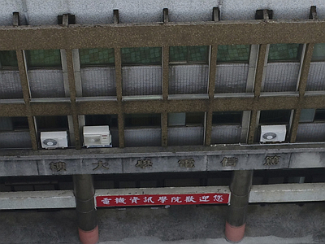
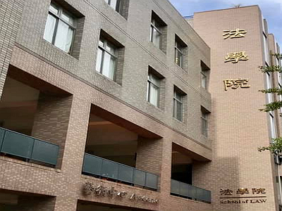
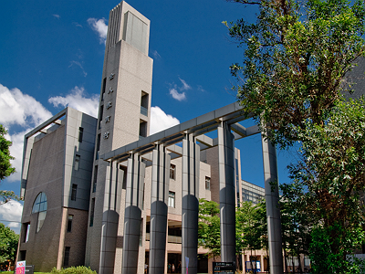
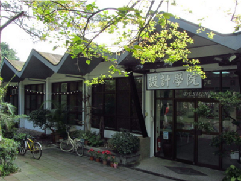
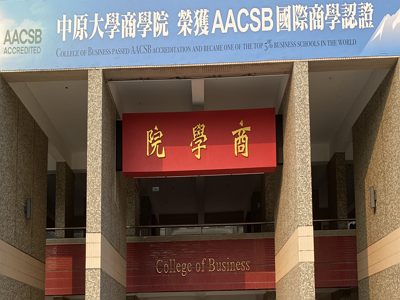
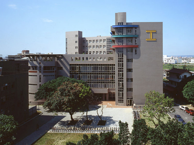

「崇法務實」的法學院
- 崇法為對法律內涵之淬練與修習。
- 務實重在培養對社會法律環境之認知與體驗。
- 目標培養具有「全人教育」內涵的財經法律人才。



「全球化、全人化、科技化、電子化」的商學院
- 全球化推動兩岸與國際間的學術交流。
- 全人化強化企業決策與倫理價值、學生對生命關懷並提升心靈素質。
- 科技化強化學生整體經濟預測能力、提升高科技產業與新興服務業的經營效率能力。
- 電子化訓練取得財金與會計領域的專業認證、e化決策分析能力及社會關懷與就業優勢。

「踐履篤實，精益求精」的工學院
- 培養具備專業能力、人格健全、敬業樂群及國際觀之工程人才。
- 培養學理與實務並重，具備能整合創新、解決問題及終身學習能力之人才。
- 學術研究以發展特色領域研究、厚植研究能量、展現學術標竿與落實產業合作。
「論證思辨，跨域創新」的理學院
- 教學上，以PBL模式創新教學。
- 研究上，推動尖端基礎研究，亦積極推動與工業界之合作。
- 國際化，與國外大學簽署交換學生計畫，亦與重要研究實驗室有合作關係。
- 「中原大學附設冠英心理治療所」提供師生教學上臨床見習和實習的需要與機會，落實本校全人關懷之教育理念。